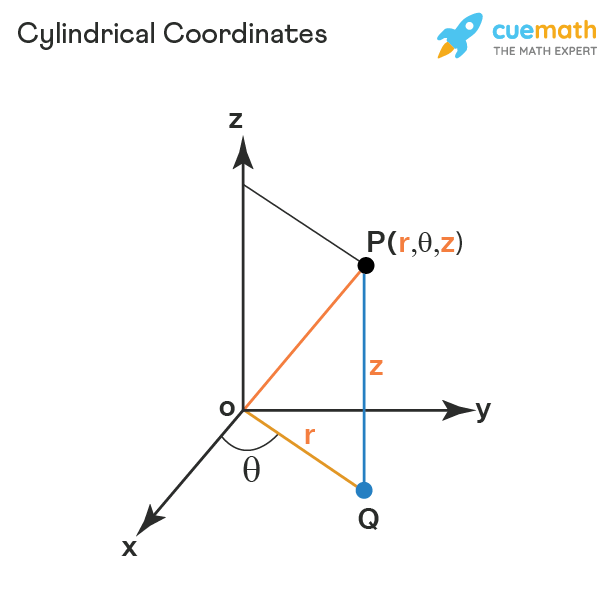
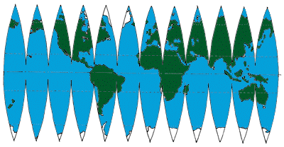
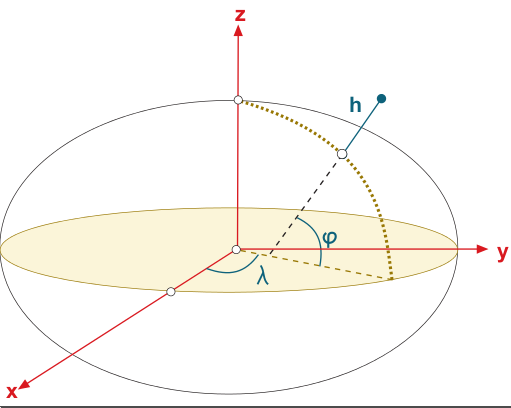
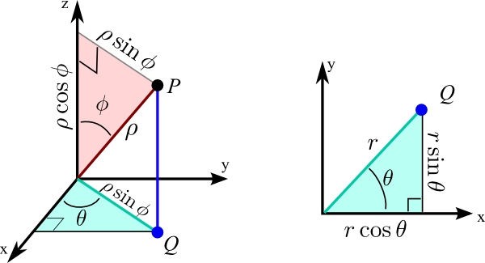

Abstract
Texture the Tamagotchi tackles the question, "how does one apply a two-dimensional texture to a three-dimensional surface?" We used WebGL through the Three.js library to render a custom 3D model of a Tamagotchi built in Blender, an egg-shaped Japanese handheld digital pet. Our implementation features freely navigable camera controls, changeable environment backgrounds, support for custom drawn textures and images, and UV projection to spherical, cylindrical, and ellipsoidal mappings. While we originally considered utilizing previous homeworks, we ultimately opted to develop our own system from scratch using Three.js to better fit our goals of wanting to be able to control the texture pipeline. Texture The Tamagotchi! is an interactive visualizer that allows users to upload textures for the tamagotchi�s irregular mesh surface, and compare how spherical, cylindrical, and ellipsoidal coordinate systems can be applied to approximate the UV mappings during projection. Using Three.js, the project runs through your local browser and contains a scene of the Tamagotchi, a reference object that uses the ideal coordinate system, as well as a grass texture and environment background for ambiance. Due to the egg-like shape of the Tamagotchi mesh, users are also able to move the camera around with their mouse and keyboard to inspect finer details.
Technical Approach
Three.js is predominantly used for webpage-based games and simulations, which made it the ideal choice for the project. Instead of building off of previous homeworks, the Three.js tutorial was helpful for learning javascript alongside handling primitives such as scene lighting, positioning, and rendering the ideal reference objects with the textures baked in. To start the project, Blender was used as the main tool for designing and exporting the mesh as a gltf file (the preferred file type for mesh imports in Three.js). The mesh started out as a simple disk, but was improved upon slowly, refining the shape as well as flaring out edges for the tamagotchi�s screen. After loading the tamagotchi shell in with Three.js, we could take advantage of the bounding box and bounding sphere of its geometry for defining key attributes in its cartesian coordinates. From a high-level perspective, the three algorithms of tamaGeoSphere, tamaGeoCylinder, and tamaGeoEllipsoid take in the bounding volumes of the entire tamagotchi and then iterates through all the vertices in the mesh. It first centers the cartesian coordinates [x,y,z] of the vertex, and then applies the relative transformation to identify the [u,v] texels from the active texture map to write into the mesh. These estimations are then stored as the tamagotchi�s uv attribute, which Three.js implicitly trusts when applying the active texture map to the material surface. tamaGeoSphere: Defines center, radius, vertices (pos), and uv (storage) for overall mesh. Then iterates through vertices [x,y,z]. Using the radius (which represents the widest part of the mesh), we can define a point on the surface of a sphere with theta and phi. Theta uses arctan of the z and x axes (toa) which constitute a flat plane like the floor, which can be thought of as the longitude of a map [-pi, pi] around the y-axis. phi uses arcos of y over the radius (cah), measuring the latitude from the y axis down [0, pi]. These collected theta, phi, and radius values thus recreate a mapping for an ideal sphere, since the radius is not consistent across the actual tamagotchi in world space. We then treat the calculated latitude and longitudes as [u,v] coordinates on our texture map by normalizing them (u gets shifted into [0, 2pi] then scaled to [0, 1], and phi is scaled down from [0, pi] to [0,1] as well). The v coordinates are flipped before storing to match the texture mapping process in Three.js.This technique effectively biases changes of the north and south poles, since a small change in [x,y,z] causes a relatively large change in theta, and thus translates to a large horizontal shift across the uv plane. tamaGeoEllipsoid: Similar to the approach of the sphere, but uses the bounding box to get the radii of the mesh along each axis, instead of assuming the radius of the widest dimension. Then when iterating through each vertex, normalizes each [x,y,z] by dividing by their respective radii, thereby honoring the original aspect ratios of the mesh before using the same theta and phi values to get coordinates on this pseudo-unit-sphere and translate into [u,v]. This normalization minimizes the weakness of the spherical approach, as now extra fat or thin parts of the mesh are more equidistant from the center when calculating theta and phi. tamaGeoCylinder: Uses the bounding box of the tamagotchi to get the mesh details. The theta +angle is calculated the same as the sphere and ellipsoid, but the y value is directly proportional to the height of the vertex. Thus, when storing v [-half height,half height], we add half the height to get a value inside [0,height], and normalize to [0,1] by dividing by the total height �h.� This normalization technique is not standard, but works for this coordinate system since we can generally estimate that the radius of the top and bottom parts of the tamagotchi are consistent, and that the height is centered (which we do). The project comes with a default loaded texture PeartoSkin.png, but also allows for user uploads and a basic canvas with color picking ability. The project stores both the default texture in case the user decides to reset, but otherwise stores the most recent image upload and canvas drawings to toggle on and off. Any uploaded image uses Three.js to convert into a texture, and then gets applied with projectionUpdate. Otherwise if users toggle on drawing, a blank canvas appears on the screen with mouse controls to allow for drawing, color picking, and clearing. The project tracks which textures to load currently, and supports projections for both uploaded and drawn textures. On top of projections on the tamagotchi surface, to better illustrate the distortions that are happening between coordinate systems, ideal objects of the coordinate systems are generated alongside the tamagotchi. These are scaled to be the same size as the tamagotchi, but provide a surface that perfectly maps with the intended coordinate system, thereby highlighting weaknesses in some regions such as the flat sections in spherical coordinates, and strengths in the relatively accurate ellipsoid. These objects therefore share the same textures and texture positioning, as it wraps around the entire surface. A description of problems encountered and how you tackled them AND lessons learned One problem we encountered during the project was missing faces on meshes�while the meshes appeared normal through the viewport and even after rendering within Blender, in our project�s view, they had holes that were previously unseen. While troubleshooting this issue, we switched a view within Blender that would hide the back sides of faces, and then the holes in the mesh were revealed, as the �correct� faces obscured the incorrect ones. After recalculating the normals, the respective faces now properly pointed inside (instead of only outside) and the holes were no longer an issue. There are some nuances in the way Three.js primitives automatically apply textures in their materials, flipping coordinates and rotating meshes themselves, as well as coordinating when these rotations occurred were important for achieving equivalent angles between the implemented projections and the built in texture mapping methods. The first iteration of image uploads and canvas drawings also had to be updated in order to also apply projection, which meant more texture loading and tracking between button interactions. The first attempt to project textures to the tamagotchi was through experimentation with Three.js� shader material. While this would allow for real time moving projections onto multiple meshes, this was both unnecessary for the intended goals, and required GLSL which had only been lightly touched upon in the final HW of the class. Instead, the project could align more closely with the rasterization homework where we worked with textures, as objects can directly have their geometry meshes edited. However instead of mapping between two 2 dimensional planes, the uv mapping could be adjusted using standard 3D coordinates. Javascript was completely new, and html + css styling to a large extent as well. Three.js has a significantly impactful tutorial that walks users through setting up node.js as well as creating a basic scene. This made onboarding more accessible, and also introduced primitives, cameras, and basic UI elements with their functions. Getting adjusted to the world scene took some experimentation, such as creating colored boxes as markers for where the axes lay in the world, as well as lighting for mesh materials that supported shadows.
Texture The Tamagotchi! is an interactive visualizer that allows users to upload textures for the tamagotchi’s irregular mesh surface, and compare how spherical, cylindrical, and ellipsoidal coordinate systems can be applied to approximate the UV mappings during projection. Using Three.js, the project runs through your local browser and contains a scene of the Tamagotchi, a reference object that uses the ideal coordinate system, as well as a grass texture and environment background for ambiance. Due to the egg-like shape of the Tamagotchi mesh, users are also able to move the camera around with their mouse and keyboard to inspect finer details.
Technical Approach
Three.js is predominantly used for webpage-based games and simulations, which made it the ideal choice for the project. Instead of building off of previous homeworks, the Three.js tutorial was helpful for learning javascript alongside handling primitives such as scene lighting, positioning, and rendering the ideal reference objects with the textures baked in. To start the project, Blender was used as the main tool for designing and exporting the mesh as a gltf file (the preferred file type for mesh imports in Three.js). The mesh started out as a simple disk, but was improved upon slowly, refining the shape as well as flaring out edges for the tamagotchi’s screen. After loading the tamagotchi shell in with Three.js, we could take advantage of the bounding box and bounding sphere of its geometry for defining key attributes in its cartesian coordinates. From a high-level perspective, the three algorithms of tamaGeoSphere, tamaGeoCylinder, and tamaGeoEllipsoid take in the bounding volumes of the entire tamagotchi and then iterates through all the vertices in the mesh. It first centers the cartesian coordinates [x,y,z] of the vertex, and then applies the relative transformation to identify the [u,v] texels from the active texture map to write into the mesh. These estimations are then stored as the tamagotchi’s uv attribute, which Three.js implicitly trusts when applying the active texture map to the material surface.
tamaGeoSphere: Defines center, radius, vertices (pos), and uv (storage) for overall mesh. Then iterates through vertices [x,y,z]. Using the radius (which represents the widest part of the mesh), we can define a point on the surface of a sphere with theta and phi. Theta uses arctan of the z and x axes (toa) which constitute a flat plane like the floor, which can be thought of as the longitude of a map [-pi, pi] around the y-axis. phi uses arcos of y over the radius (cah), measuring the latitude from the y axis down [0, pi]. These collected theta, phi, and radius values thus recreate a mapping for an ideal sphere, since the radius is not consistent across the actual tamagotchi in world space. We then treat the calculated latitude and longitudes as [u,v] coordinates on our texture map by normalizing them (u gets shifted into [0, 2pi] then scaled to [0, 1], and phi is scaled down from [0, pi] to [0,1] as well). The v coordinates are flipped before storing to match the texture mapping process in Three.js.This technique effectively biases changes of the north and south poles, since a small change in [x,y,z] causes a relatively large change in theta, and thus translates to a large horizontal shift across the uv plane.
|  |  |
tamaGeoEllipsoid: Similar to the approach of the sphere, but uses the bounding box to get the radii of the mesh along each axis, instead of assuming the radius of the widest dimension. Then when iterating through each vertex, normalizes each [x,y,z] by dividing by their respective radii, thereby honoring the original aspect ratios of the mesh before using the same theta and phi values to get coordinates on this pseudo-unit-sphere and translate into [u,v]. This normalization minimizes the weakness of the spherical approach, as now extra fat or thin parts of the mesh are more equidistant from the center when calculating theta and phi.
tamaGeoCylinder: Uses the bounding box of the tamagotchi to get the mesh details. The theta +angle is calculated the same as the sphere and ellipsoid, but the y value is directly proportional to the height of the vertex. Thus, when storing v [-half height,half height], we add half the height to get a value inside [0,height], and normalize to [0,1] by dividing by the total height “h.” This normalization technique is not standard, but works for this coordinate system since we can generally estimate that the radius of the top and bottom parts of the tamagotchi are consistent, and that the height is centered (which we do).
The project comes with a default loaded texture PeartoSkin.png, but also allows for user uploads and a basic canvas with color picking ability. The project stores both the default texture in case the user decides to reset, but otherwise stores the most recent image upload and canvas drawings to toggle on and off. Any uploaded image uses Three.js to convert into a texture, and then gets applied with projectionUpdate. Otherwise if users toggle on drawing, a blank canvas appears on the screen with mouse controls to allow for drawing, color picking, and clearing. The project tracks which textures to load currently, and supports projections for both uploaded and drawn textures. On top of projections on the tamagotchi surface, to better illustrate the distortions that are happening between coordinate systems, ideal objects of the coordinate systems are generated alongside the tamagotchi. These are scaled to be the same size as the tamagotchi, but provide a surface that perfectly maps with the intended coordinate system, thereby highlighting weaknesses in some regions such as the flat sections in spherical coordinates, and strengths in the relatively accurate ellipsoid. These objects therefore share the same textures and texture positioning, as it wraps around the entire surface.
One problem we encountered during the project was missing faces on meshes–while the meshes appeared normal through the viewport and even after rendering within Blender, in our project’s view, they had holes that were previously unseen. While troubleshooting this issue, we switched a view within Blender that would hide the back sides of faces, and then the holes in the mesh were revealed, as the “correct” faces obscured the incorrect ones. After recalculating the normals, the respective faces now properly pointed inside (instead of only outside) and the holes were no longer an issue. There are some nuances in the way Three.js primitives automatically apply textures in their materials, flipping coordinates and rotating meshes themselves, as well as coordinating when these rotations occurred were important for achieving equivalent angles between the implemented projections and the built in texture mapping methods. The first iteration of image uploads and canvas drawings also had to be updated in order to also apply projection, which meant more texture loading and tracking between button interactions. The first attempt to project textures to the tamagotchi was through experimentation with Three.js’ shader material. While this would allow for real time moving projections onto multiple meshes, this was both unnecessary for the intended goals, and required GLSL which had only been lightly touched upon in the final HW of the class. Instead, the project could align more closely with the rasterization homework where we worked with textures, as objects can directly have their geometry meshes edited. However instead of mapping between two 2 dimensional planes, the uv mapping could be adjusted using standard 3D coordinates. Javascript was completely new, and html + css styling to a large extent as well. Three.js has a significantly impactful tutorial that walks users through setting up node.js as well as creating a basic scene. This made onboarding more accessible, and also introduced primitives, cameras, and basic UI elements with their functions. Getting adjusted to the world scene took some experimentation, such as creating colored boxes as markers for where the axes lay in the world, as well as lighting for mesh materials that supported shadows.
Results
.png) |
.png) |
|
.png) |
.png) |
.png) |
 |
 |
 |
.png) |
.png) |